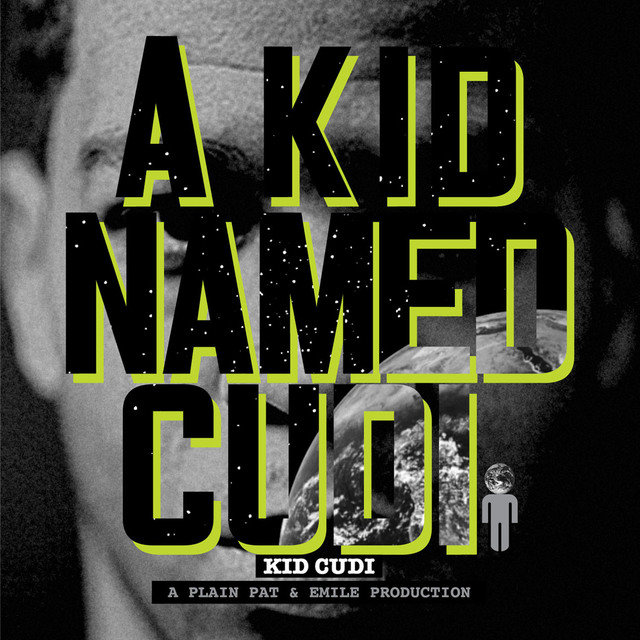
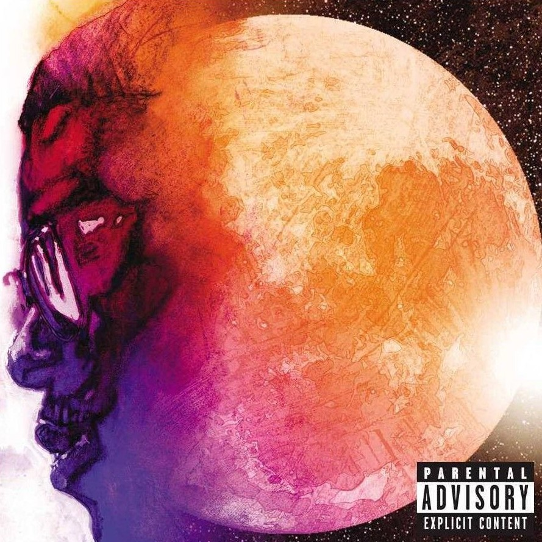
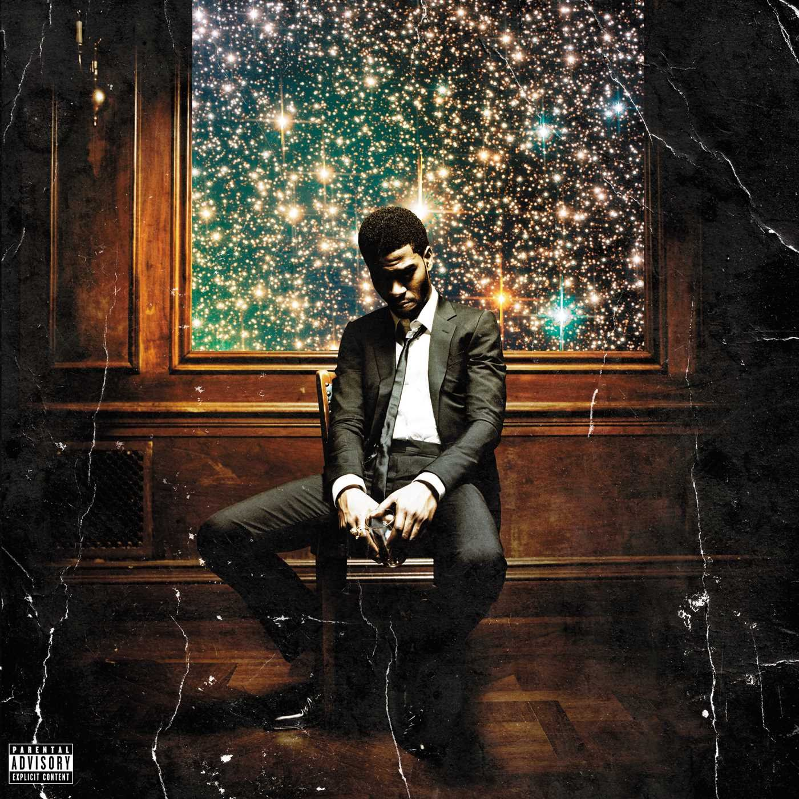
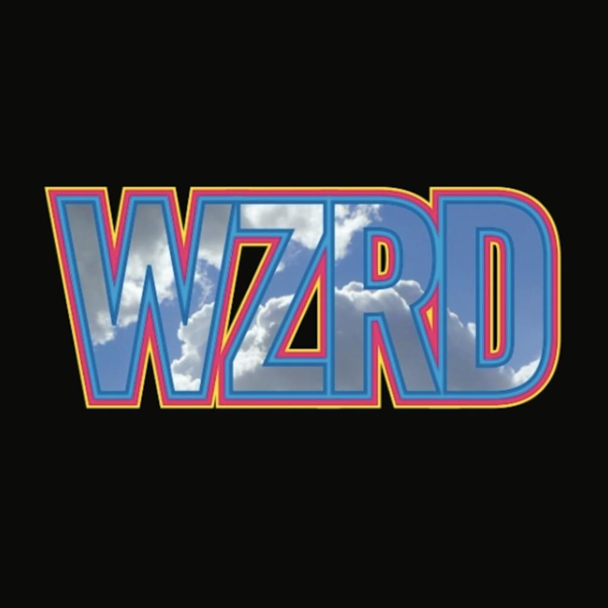
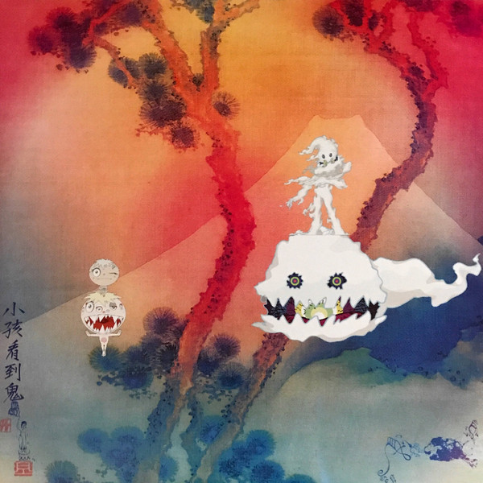
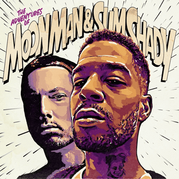

Before his rise to fame, Scott Ramon Seguro Mescudi on January 30, 1984, in Cleveland, Ohio, and grew up in Shaker Heights and Solon. He is the youngest of four children, with two brothers, Domingo and Dean, and a sister, Maisha.
He was mainly of African-American descent.
When he was 11 years old, Cudi's father died of cancer; his passing had a significant effect on Cudi's personality and subsequently his music.
He studied film at the University of Toledo, but dropped out after a year.
He couldn't join the Navy because of his juvenile record so since he was already rapping towards the end of school, he decided to move to New York city to pursue a music career and stayed with his uncle.
He worked in a BAPE store where he ultimately met Kanye West.
Music
The discography of American recording artist Kid Cudi consists of six studio albums, one mixtape, 30 singles (including 15 as a featured artist), two promotional singles and 27 music videos.
Aside from his solo career, Cudi is a member of WZRD, a rock band and production team he formed with longtime friend and collaborator Dot da Genius.
Additionally, Cudi is also one half of the hip hop duos Kids See Ghosts and The Scotts, alongside Kanye West and Travis Scott respectively.
As of March 2019, Kid Cudi has sold a combined 20 million records according to RIAA.
A Kid Named Cudi (2008) | 17 Tracks | 49:35
Man on the Moon (2009) | 18 Tracks | 58:33
Man on the Moon 2 (2010) | 18 Tracks | 62:06
WZRD (2012) | 11 Tracks | 47:12
Indicud (2013) | 18 Tracks | 70:44

Satellite Flight (2014) | 10 Tracks | 41:14

Speedin' Bullet 2 Heaven (2015) | 26 Tracks | 91:22

Passion, Pain & Demon Slayin' (2016) | 19 Tracks | 86:52

Kids See Ghosts (2018) | 7 Tracks | 23:50
Leader of the Delinquints (2020) | Single | 3:09
The Scotts (2020) | Single | 2:45

The Adventures of Moon Man & Slim Shady (2020) | Single | 4:24
One of the favourite things about Kid Cudi that I absolutely love is his freedom in creativity and deadshot focus on bringing out more to the table in music and even in entertainment fields.
This embedded video is one of the most inspirational pieces that I regularly watch so that I don't lose sight of creating my own meaning. Here's a TedX talk by Scott Mescudi, standing in his school auditorium where it all started for him.